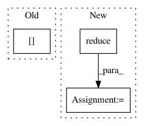

6cb84f4b742861e823015cac18535efa468b0d81,autokeras/layer_transformer.py,,conv_dense_to_wider_layer,#Any#Any#Any#,128
Before Change
pre_filter_shape = pre_layer.kernel_size
conv_func = get_conv_layer_func(len(pre_filter_shape))
n_pre_filters = pre_layer.filters
n_units = next_layer.get_weights().shape[1]
teacher_w1 = pre_layer.get_weights()[0]
teacher_w2 = next_layer.get_weights()[0]
n_total_weights = reduce(mul, teacher_w2.shape)
After Change
new_pre_layer.build((None,) * (len(pre_filter_shape) + 1) + (pre_layer.input_shape[-1],))
new_pre_layer.set_weights((student_w1, student_b1))
new_next_layer = Dense(n_units, activation="relu")
n_new_total_weights = int(reduce(mul, student_w2.shape))
input_dim = int(n_new_total_weights / n_units)
new_next_layer.build((None, input_dim))
new_next_layer.set_weights((student_w2.reshape(input_dim, n_units), teacher_b2))
return new_pre_layer, new_next_layer
In pattern: SUPERPATTERN
Frequency: 3
Non-data size: 3
Instances
Project Name: keras-team/autokeras
Commit Name: 6cb84f4b742861e823015cac18535efa468b0d81
Time: 2017-12-15
Author: jhfjhfj1@gmail.com
File Name: autokeras/layer_transformer.py
Class Name:
Method Name: conv_dense_to_wider_layer
Project Name: asyml/texar
Commit Name: e9d94ff87f957b37a7dfe37b0013beedea6acb3d
Time: 2017-11-10
Author: junxianh2@gmail.com
File Name: txtgen/modules/connectors/connectors.py
Class Name:
Method Name: _mlp_transform
Project Name: OpenMined/PySyft
Commit Name: 59d4bbaaf06850e2dfb357855f50b05f6c9aadb1
Time: 2020-10-02
Author: skywind29@users.noreply.github.com
File Name: syft/frameworks/torch/fl/utils.py
Class Name:
Method Name: federated_avg